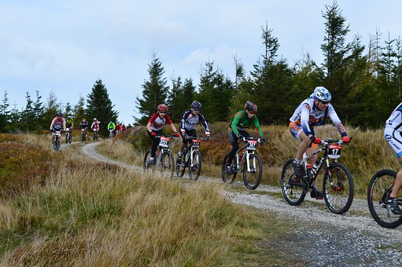
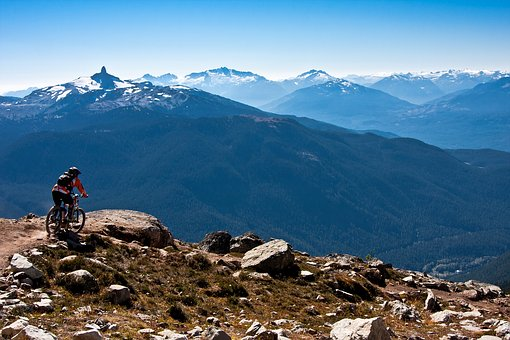

We have some incredible opportunities for adventure in our awesome Bozeman Montana Mountains for every skill level, price point, and length of time you want to play. All of our adventures comes with a experienced guide for every group or individual ride. One guide for every 5 riders.
Beginner Trail
Starting at $75

Bangtail Divide Trail
If you seek a relatively easy route with stunning views of several mountain ranges along the way, then this trail is for you. Totaling 25 miles in length, this singletrack route climbs and descends via switchbacks just above Bridger Canyon and is only an 11-mile drive from town.
Intermediate Trail
Starting at $100
Mile Creek Trail
Located in the heart of the Madison range, Mile Creek Trail offers a strenuous climb up to the Continental Divide via the Lionhead trail system. Devoted bikers can make this trail into a full day loop which meanders near Sheep Lake and ends at Sheep Creek.
Advanced Trail
Starting at $150

Curly Lake Trail
With a trailhead elevation of 5,800 feet, the ride to Curly Lake is very difficult as it reaches nearly 10,000 feet at its highest point. This trail is a loop with a total distance of 23 miles making it a favorite among experienced riders who love seeing the stunning views of the Tobacco Root Mountains throughout.
LUXURY ADD ONS
Feel like you are in the lap of adventure luxury by adding some of these amazing add ons.
All meals on the trail brought to you, where you are on the trail. $35 person
Don't want to hassle with the bikes or gear? We will bring you some of our top of the line bikes to use on your trip along with helmets and gloves. $35 per person
Butler Service includes all add ons and ice cream sundaes for all to enjoy at the end of your ride. $75 per person